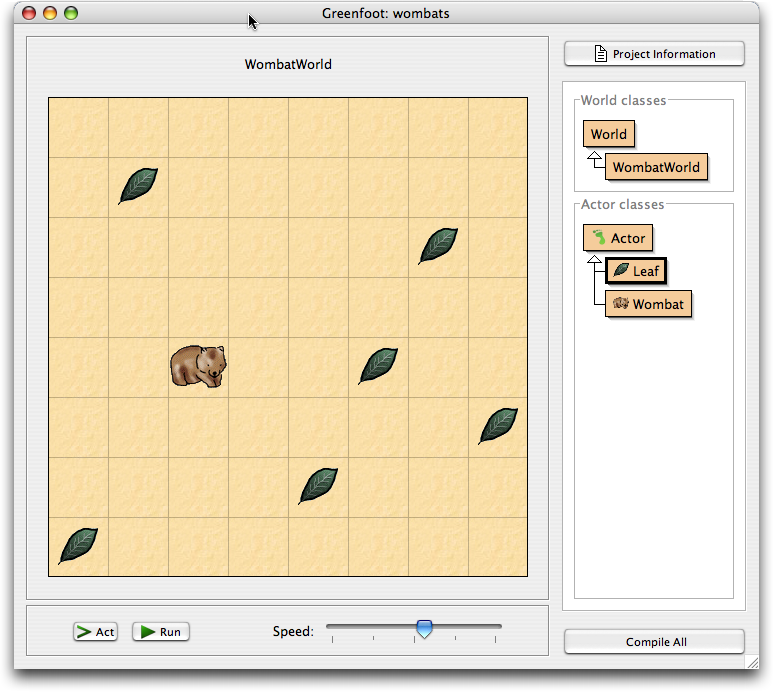
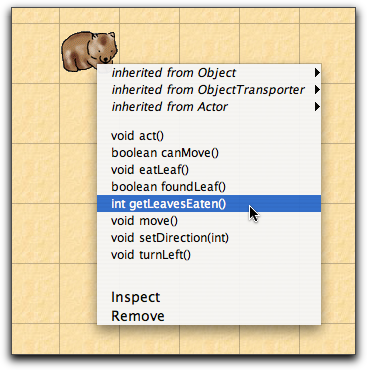

Greenfoot Tutorial Version 1.0 for Greenfoot Version 1.0
Michael Kölling
This tutorial is an introduction to the Greenfoot Object World. Greenfoot is a software tool designed to let beginners get experience with object-oriented programming. It supports development of graphical applications in the Java™ Programming Language. Greenfoot was designed and implemented at the University of Kent, England, and Deakin University, Melbourne, Australia. More information about Greenfoot is available at www.greenfoot.org. This tutorial is intended for people who want to familiarise themselves with Greenfoot. It aims at being brief, rather than complete, and focuses on functionality of the Greenfoot environment. It does not attempt to teach Java. It assumes that the reader knows some Java already, or is getting some support while working through the second half of this tutorial. All of the activities described here assume working with an existing scenario, and discuss how to use and make modification to that scenario. Users who want to built their own scenarios, or make major changes to existing scenarios, should also read the Greenfoot Programmer’s Manual. The Greenfoot system and this tutorial are available 'as is', free of charge to anyone for use and non-commercial re-distribution. Disassembly of the system is prohibited. No part of the Greenfoot system or its documentation may be sold for profit or included in a package that is sold for profit without written authorisation of the authors. The copyright © for Greenfoot is held by Poul Henriksen and Michael Kölling. Three different versions are available: one for Windows, one for MacOS X, and one for all other systems. Prerequisites You must have Java 5 (a.k.a. JDK 1.5) or later installed on your system to use Greenfoot. Generally, updating to the latest stable (non-beta) Java release is recommended. If you do not have JDK installed you can download it from Sun’s web site at http://java.sun.com/j2se/ . Do not download a version named “JRE” (Java Runtime Environment) – the JRE is not sufficient. You need a version that is named JDK. On MacOS X, a recent J2SE version is pre-installed - you do not need to install it yourself. For Microsoft Windows systems, download the Windows version of the installer. Double-click the installer file, and follow the instructions. The installation follows a standard installation process. For Mac OS X, download the Mac OS version of the software. The download file is a zip file. Your browser may unpack that file automatically for you. If not, double-click the zip file to unpack it. The resulting folder contains the Greenfoot application and sample scenarios. Both can be placed anywhere you like. One common arrangement is to place the Greenfoot application into the Applications folder and the ‘scenarios’ into the Documents folder. The Installer for all other systems is an executable jar file. You can run the installer by opening a command line, and typing
java -jar greenfoot-installer-XX.jar (where XX is the version number of your install file). On some systems, double-clicking the jar file may also work. (Note that this command assumes that the ‘java’ command is in your command path. If not, install and set up java first.) This tutorial uses two scenarios, called ‘wombats’ and ‘wombats2’ . They are distributed together with this tutorial. Each scenario will appear as one folder in your file system.

Figure 1: The Wombat scenario in Greenfoot
You may have opened this tutorial from within the Greenfoot application. That's good. If not, then you need to start Greenfoot now. The installation process has installed an application named ‘greenfoot’. Start it. (On Linux and Unix systems, ‘greenfoot’ is an executable shell script.) Once Greenfoot has started up, and if the Wombats scenario is not automatically opened, choose ‘Open...’ from the ‘Project’ menu and select the ‘wombats’ scenario from the Greenfoot sample scenarios. You should see something like Figure 1 on screen (except that you will not see any leaves or wombats in the world yet). The large grid area that covers the majority of the window is called “ the world ”. Since we have a scenario here that has to do with wombats (see Footnote 1), we see a wombat world. Towards the right side of the window is the class display . Here you can see all Java classes that are involved in the project. The classes “World” and “Actor” will always be there – they come with the Greenfoot system. The other classes belong to the wombat scenario, and will be different if you use different scenarios. Below the world are the Execution Controls (the area with the ‘Act’ and ‘Run’ buttons and the slider). Towards the top right corner of the window is a button labelled “Scenario Information”. Most scenarios will, when you click this button, display some information regarding the scenario. This information typically tells you the purpose of the scenario, how to run it, what you can do with it, and maybe some suggestions how you could modify it yourself. We will now place some objects into the world. Right-click (on Mac: Control-click) the Wombat class in the class display. You will see a pop-up menu. Choose ‘New Wombat()’. Then click anywhere in the world. You have just created a wombat (in Java terms: an object) and placed it into the world. Wombats eat leaves, so lets put some leaves into the world as well. Right-click the Leaf class and place the leaf. There is a shortcut to placing several objects a bit quicker: shift-clicking into the world. Make sure the Leaf class is selected, then hold down the Shift key and click into the world several times. You will place one object of the selected class at every click. Click the ‘Act’ button in the execution controls. Each object now acts – that is: each object does whatever it wants to do. What objects want to do depends on how they are defined – we’ll get to that a little later. In our example, leaves are defined to do nothing, while wombats move forward. If you haven’t done so, place two wombats into the world and press Act again. Both will move. Wombats also like to eat leaves. If they happen to come across a leaf in their path, they will eat it. Click the ‘Run’ button. This is equivalent to clicking the Act button over and over again, very quickly. You will notice that the Run button changes to a ‘Pause’ button. Clicking it stops the whole show. The slider next to the Act and Run buttons sets the speed. Click Run and then change the slider, and you’ll see what I mean.
Instead of just running the whole scenario, you can also invoke single methods. A method is a single action that an object can perform. Make sure you have a wombat in the world, and the scenario is not running. Then right-click on the wombat, and you see that objects in the world also have a pop-up menu (Figure 2). 
Figure 2: An object popup menu
You can select any of the methods shown here to ask the wombat to do something. Try, for example, turnLeft(). Selecting this from the menu tells the wombat to turn to its left. Try move(). Some methods give you an answer. getLeavesEaten(), for example, will tell you how many leaves this wombat has eaten so far. Try it. You will also notice a method called ‘act()’. This method is called every time you click the Act button. If you want just one object to act instead of all the objects in the world, you can do this by invoking the object’s act method directly. If you have many objects in the world that you do not want anymore, and you want to start all over, there is one easy option: throw away the world and create a new one. This is usually done by clicking the 'Reset' button at the bottom of the screen. You will get a new, empty world. The old world is discarded (and with it all the objects that were in it) – you can only have one world at a time. We have seen that objects in the world have methods which you can invoke via a pop-up menu. The world itself is also an object with methods that you can invoke. We have seen in the previous section how you can create new worlds. Now we want to invoke a method of the world object. Above the world display is a title that shows the name of the world – “WombatWorld” in our case. Right-click this title, and you will see the world’s menu. (Note that this is the title above the world's display, not the class name in the right hand panel.) One of the methods in this menu is ‘populate()’. Try it out. It is a method that creates several leaves and wombats and places them into the world. You can then run the scenario. Another world method is ‘randomLeaves(int howMany)’. This method places some leaves in the world at random locations. Note that this method has some words between the parenthesis after its name: int howMany . This is called a ‘parameter’. It means that you must specify some additional bit of information when you invoke this method. The term ‘int’ tells you that a whole number is expected, and ‘howMany’ suggests that you should specify how many leaves you want. Invoke this method. A dialogue will pop up that lets you enter a value for this parameter. Enter a number – say: 12 – and click Ok. (You may notice, if you count, that it sometimes appears as if fewer than the specified number of leaves were created. This is because some leaves may be at the same location, and are lying on top of each other.) Okay, maybe you got enough of wombats running around in circles endlessly – let’s move on to the really interesting stuff: programming more interesting behaviour for your own wombats!
The remainder of this tutorial assumes that readers are familiar with some basics of Java programming. It is not intended as a first activity for beginning students. You can program your own objects – wombats, or anything else you like – by writing some Java code for the class of the object. That’s what we’ll do now. Double-click the Wombat class in the class display. A text editor opens and you will see the Java source code for the Wombat class. The first thing we want to do is change the wombat’s behaviour so that, when it cannot move forward, it turns to a random direction instead of always turning left. To achieve this, we first add a ‘turnRandom()’ method. Add the following method to the Wombat class: /** * Turn in a random direction. */ public void turnRandom() { // get a random number between 0 and 3... int turns = Greenfoot.getRandomNumber(4);
// ...an turn left that many times. for(int i=0; i<turns; i++) { turnLeft(); } } Then we modify ‘act()’ to make use of turnRandom. The act() method currently reads:
public void act() { if(foundLeaf()) { eatLeaf(); } else if(canMove()) { move(); } else { turnLeft(); } } Replace the call to ‘turnLeft()’ at the end with a call to ‘turnRandom()’. Okay, we’re done. Now let’s try it out. Click the ‘Compile’ button in the editor. If any errors are displayed, fix them and compile again. Repeat this until the class compiles without errors. Now you can close the editor. Before you can execute you must compile your project. You can do this from within the editor, or from Greenfoot’s main window. Once you have successfully compiled, you can create objects again. Compilation (if successful) automatically instantiates a world object. There are two ways how you can change the image of objects: You can change the image of a class, which will change the default image for all objects of that class. Or an object may change its image programmatically, which will change only the individual object. Each object can change its image as often as it likes. To set a class image, choose ‘Set Image...’ from the class’s pop-up menu. You could try this with the Leaf class – change the image to, say, a banana, and the wombat will collect bananas. (Probably not what your local zoo-keeper would recommend, but that’s why we’re using a simulation...) Greenfoot has a library of images built-in which you can use, or you could drop your own images into the ‘images’ folder inside the scenario folder (‘wombats’) and then use those. The second possibility is to let an object change its own image as part of its programmed action. It can easily do this by calling the ‘setImage’ method inherited from Actor. There are two versions of ‘setImage’: one expects a parameter of type GreenfootImage, the other takes the name of a file (and then reads that image file into a GreenfootImage and sets it). We will use the variation that reads an image from a file. The task we want to achieve is that wombats don’t appear upside-down when walking to the left. The ‘wombats’ project already contains a file named ‘wombat-left.gif’ in its ‘images’ sub-folder. This is an image file in GIF format that shows a mirrored image of the wombat we have seen so far: a wombat looking left. We can change the image of the wombat to the left-facing version by writing:
setImage("wombat-left.gif"); We will use this method when the wombat changes direction. To do this we need to edit the Wombat’s ‘setDirection(int Direction)’ method. Find it in the Wombat source code. We will add some lines here to set the correct image and correct rotation when we set a direction. We will use the ‘wombat-left’ image when heading west and north, and the original ‘wombat’ image when going east or south. Note that the ‘wombat-left’ image faces west by default – it does not need to be rotated when we head west. Here is the new version of ‘setDirection’:
/** * Sets the direction we're facing. */ public void setDirection(int direction) { this.direction = direction; switch(direction) { case SOUTH : setImage("wombat.gif"); setRotation(90); break; case EAST : setImage("wombat.gif"); setRotation(0); break; case NORTH : setImage("wombat-left.gif"); setRotation(90); break; case WEST : setImage("wombat-left.gif"); setRotation(0); break; default : break; } } This works well enough as it is. If this was done more seriously, we should load the image objects from file only once (in the constructor) and store them in fields of type GreenfootImage . Then we can use the two image objects to change the image repeatedly. Maybe we should now add separate images for up and down movement – we leave this to the enthusiastic reader. To make changes to object behaviour, you often need to make use of some standard Greenfoot classes. Greenfoot provides four important classes that you should know about: World, Actor, GreenfootImage and Greenfoot. The first two are visible in the interface, and form the superclasses for the scenario’s world and object classes. GreenfootImage is used to work with images, and Greenfoot provides access to the Greenfoot framework itself. The easiest way to learn about these classes is to look at the Greenfoot API online documentation. You find it at http://www.greenfoot.org/programming/ From that page, you can get to an online version of the Greenfoot class descriptions (called the “Greenfoot API”), and you can download the description in a single, printable document. Invoke the ‘Inspect’ function from the menu of any wombat in the world. This allows you to look inside the object and inspect the value of its fields. This can be helpful for testing while classes are being developed. You will notice that you see some fields defined in the Wombat class (such as ‘leavesEaten’) and some that are not defined in Wombat. The additional fields (such as x, y and rotation) are inherited from Actor and are present in all Greenfoot objects. If a value is shown as an arrow symbol, then the field contains a reference to another object, which can be inspected in turn (by selecting and clicking ‘Inspect’). It’s time to make life for our wombats a bit more challenging by adding some obstacles: rocks. (We’ll make the rocks so big that wombats cannot climb over them.) To do this, we create a new actor class. Choose ‘New subclass’ from the pop-up menu of Actor. This will create a new class as a subclass of Actor. When prompted for a class name, type ‘Rock’. You are also prompted to select an image for the class. You could find (Google is your friend!) or make (in any graphics program) an image and place it into the project’s ‘images’ directory before creating the class. It would then be presented in this dialogue. In this case, we have already placed an image file named ‘rock.gif’ into the project for you to make things a little quicker. Select the image, click Ok, and a new class named Rock is created. Now open the editor for that class. You will notice that a source skeleton is automatically generated. We don’t actually have to write any code right now. (Rocks don’t have any particular behaviour.) Close the editor, compile and test (create an object). Voilà– there are your rocks! Now populate the scenario a bit and test the wombats. (You could use the world’s ‘populate’ and ‘randomLeaves’ methods, and then add some rocks by hand.) You will notice that you have rocks, but the wombats still run through them. Oh well – more work to do. Making major modifications or completely new scenarios is not covered in this tutorial. If you want to do that, you have two choices: You could examine existing scenarios, or you could read the Greenfoot Programmer’s Manual. Of course, you also need to have the Greenfoot class documentation (the Greenfoot API) available, as discussed above. The last thing we do here, to give you a quick impression, is to make one more modification to stop wombats from walking through rocks. Open the editor for class Wombat and find the ‘canMove’ method. Currently, this method checks whether we are facing the edge of the world. We need to modify it so that it also returns false when there is a rock in front of us. Replace the last return statement, which currently reads
return true; with the following:
List rocks = myWorld.getObjectsAt(x, y, Rock.class); if(rocks.isEmpty()) { return true; } else { return false; }
This code snippet gets a list of all rocks from the cell in front of us. If this list is empty, we can move forward, otherwise we cannot. The project ‘wombats2’, which was included in the download with this tutorial, includes all the changes discussed here. Open some of the scenarios that were installed together with your Greenfoot software. See which ones take your interest, and then see how they are done. Go to the Greenfoot web site and look for more scenarios. Most of all: talk to other Greenfoot users. There are two ways to hear more about Greenfoot and get into contact with the Greenfoot community:
The mailing list is here: http://www.greenfoot.org/about/mailing.html Have fun! 1 A wombat is a native Australian animal. If you don’t know about them, look them up at Wikipedia: http://en.wikipedia.org/wiki/Wombat . |